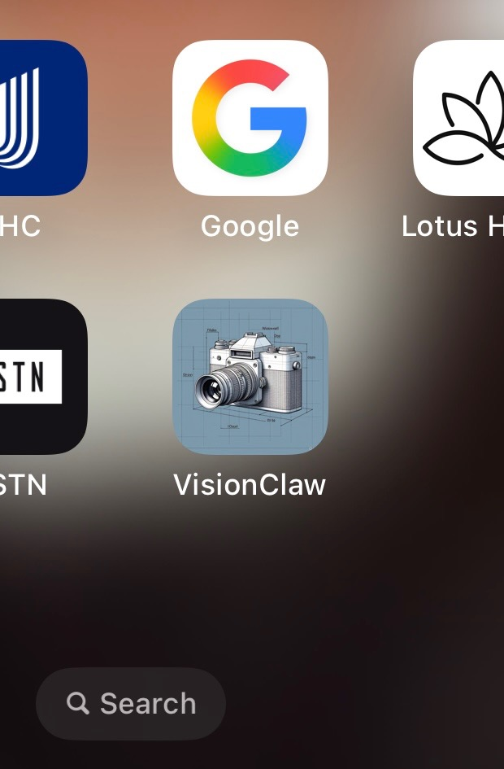
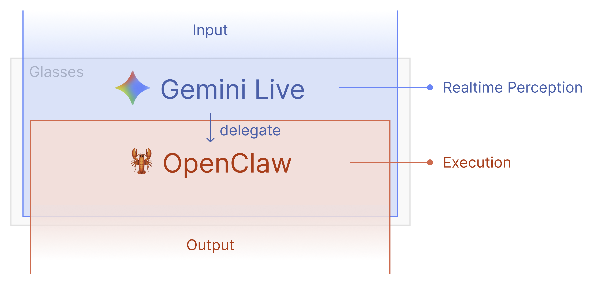

VisionClaw — JARVIS in my glasses
A real-time AI assistant running on my Oakley Meta HSTN smart glasses. See what I see, hear what I say, take actions on my behalf.

What it is
I wanted to know how close we are to Tony Stark's JARVIS — an assistant that actually lives with you, sees what you're looking at, and can do things on your behalf without you reaching for a phone. Turns out: pretty close.
VisionClaw runs as an iOS app on my iPhone, paired to my Oakley Meta HSTN glasses. The glasses stream their camera and microphone to the phone. The phone forwards them in real time to Google's Gemini Live API. Gemini sees what I see, hears what I say, and talks back — out loud, through the glasses' speakers.
I can ask things like:
- "What am I looking at?" — Gemini describes the scene through the glasses' camera
- "Add milk to my shopping list" — routed through a local agent that actually does it
- "Send a message to John saying I'll be late" — drafted and sent via WhatsApp/iMessage
- "Search for the best coffee shops nearby" — web search, results spoken back
The voice loop is the whole experience. No screen, no typing. You just talk and it answers. The first time it actually worked I sat in my car for ten minutes asking it questions like a kid with a new toy.

How it works
The interesting part is that none of this is "AI on the glasses." The Meta glasses are a sensor and a speaker — the brain lives on the phone (and in the cloud).

The pipeline:
- Glasses capture video (~24fps) and audio. Both stream to the iOS app over the Meta Wearables DAT SDK.
- iOS app throttles the video to ~1 frame per second, JPEG-encodes it, and pushes audio + frames to Gemini Live over a single WebSocket. Audio is bidirectional — Gemini's reply comes back as PCM audio that plays through the glasses' speakers.
- Gemini Live handles everything in one shot — speech recognition, understanding, vision, response generation, speech synthesis. No separate STT or TTS step. Latency is low enough to feel like a conversation.
- OpenClaw (optional) runs locally on my Mac and gives Gemini a single
executetool call. When I ask for an action, Gemini decides what to do, callsexecute(task: "…"), and OpenClaw uses its 56+ skills to actually carry it out — messaging apps, web search, smart home, notes, reminders.
The stack
What I actually built
The app itself is the open-source VisionClaw project — credit where it's due. What I did was get the whole stack working end-to-end on my hardware:
- Cloned the repo, opened it in Xcode, wired up my Gemini API key
- Paired the glasses through the Meta AI app's hidden Developer Mode (you have to tap the version number five times, like a Konami code)
- Sideloaded the app to my iPhone and got the audio/video round-trip working
- Stood up OpenClaw locally so the assistant could actually do things, not just describe them
It's not a product. It's me proving to myself — and now, to you — that the pieces are here. The "ambient AI" thing isn't five years away. You can wire it together this weekend.
Why this matters
Smart glasses have been a punchline for a decade. What changed is the model on the other end of the wire. Gemini Live is the first time real-time multimodal voice + vision feels like talking to a person, not querying a database. The glasses are just the form factor that finally makes it natural — no phone in your hand, no screen between you and the world.
I think a lot of "AI products" people are trying to build right now look like apps because we don't have a better paradigm yet. This is what comes next.